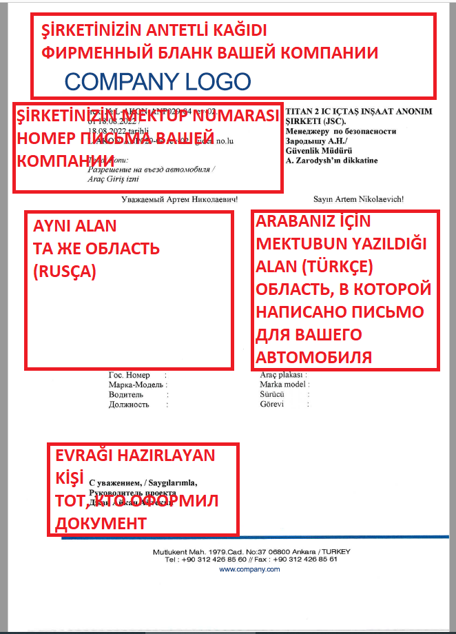

Akkuyu NGS Sahasında Geçiş Kartı Başvurusu İçin Gerekli Adımlar ve Belgeler
Akkuyu NGS sahasında geçiş kartı başvurusunda bulunacak personelin, süreci başarıyla tamamlayabilmesi için belirli adımları takip etmesi ve aşağıda
listelenen belgeleri hazırlayarak sunması gerekmektedir. Eksik bilgi veya belge içeren başvurular işleme alınmayacaktır.
1. Başvuru Mektubu Hazırlığı
Başvuru öncesinde, T2-IC JV Güvenlik Direktörü Artem Zarodysh ve Eş Direktör Selim Temren'e hitaben bir mektup hazırlayın. Bu mektupta, firmanızın
personel ve araç bilgilerini detaylandırarak, aşağıdaki ayrıntılara yer verin:
• Personel sayısını beyaz yaka ve mavi yaka olarak ayrı ayrı belirtin.
• Araçları, beyaz kart ve sarı kart olmak üzere ayrıştırarak hafif araç, kamyonet, ve servis araçları için bilgiler verin.
Hazırlanan mektubu,office@t2ic.com adresine gönderin ve e-posta gönderirken Cc bölümüne gonenc.caynak@t2ic.com ve
rifat.kucuk@t2ic.com adreslerini ekleyin.
2. Başvuru Belgeleri
Başvuru sırasında aşağıdaki belgelerin eksiksiz olarak iletilmesi gerekmektedir:
• Araç Ruhsatı: Her araç için ruhsat fotokopisi
• Araç Mektup Formu: Excel formatında doldurulmuş ve firma tarafından kaşe-imzalı olmalıdır.
• İki Dilli Başvuru Mektubu: Rusça ve Türkçe hazırlanmış, PDF formatında
• Araç Fotoğrafları: Aracın dört yanından çekilmiş fotoğraflar
3. Geçiş Kartı Türleri ve Kullanım Koşulları
Akkuyu NGS sahasında binek araçlar için iki tür elektronik geçiş kartı kullanılmaktadır:
• Beyaz Elektronik Geçiş Kartı: 7/24 giriş-çıkış yapılabilen kart türüdür.
• Sarı Elektronik Geçiş Kartı: Giriş-çıkış saatleri kısıtlıdır.
- Giriş ve çıkış saatleri: 06:00 - 10:00 ve 16:00 - 20:00 saatleri dışında kullanım yasaktır.
- Yük taşıma araçları için yalnızca sarı kart verilmektedir; beyaz kart verilmez.
4. Başvuru Pozisyonu Şartı
Başvuruda bulunacak personelin Bölüm Müdürü veya Saha Şefi (saha adı belirtilerek) seviyesinde veya daha yüksek bir pozisyonda olması gerekmektedir.
Bu pozisyonlardan daha düşük pozisyonda olan kişilerin başvuruları işleme alınmayacaktır.
ÖNEMLİ:Belirtilen saatler dışında sarı kartlı araçların nizamiye giriş ve çıkışı YASAKTIR.

Başvuru Mektubu Gereksinimleri
Akkuyu NGS sahasında geçiş kartı başvurusu için hazırlayacağınız mektubun aşağıdaki gereksinimleri karşılaması gerekmektedir.
Eksik veya hatalı bilgi içeren talepler işleme alınmayacak, başvurular geri iade edilecektir.
1. Firma Bilgileri ve Personel Detayları
• Personel Sayısı: Beyaz yaka ve mavi yaka çalışan sayısı ayrı ayrı belirtilmelidir.
• Araç Sayıları: Hafif araç, kamyonet ve servis araçlarının sayısı beyaz kart ve sarı kart olarak ayrılarak belirtilmelidir.
2. İhtiyaç Gerekçesi
• Beyaz elektronik geçiş kartı talep ediliyorsa, sarı kart hamili araçların yasak saatlerde geçiş ihtiyacı için neden ve gerekçe hatasız olarak yazılmalıdır.
• Yoğun saatlerde geçiş ihtiyacını detaylandırmayan ya da gerekçelendirmeyen başvurular işleme alınmayacaktır.
3. Dil Gereksinimleri
• Mektubun Rusça ve Türkçe olarak hatasız şekilde tercüme edilmiş olması zorunludur.
İşlem Süreci
Başvurular ay sonunda değerlendirmeye alınacaktır.
Onay Süreci: Akkuyu Nükleer A.Ş. İnşa Edilen NGS Direktörü Genel Müdür Birinci Yardımcısı S. Butskikh tarafından onay, başvuruyu takip eden ayın ikinci
haftasında gerçekleşecektir.
Araç mektup formunda, Talep Durumu sütununda aşağıdaki seçeneklerden biri doğru olarak seçilmelidir:
• Yeni Talep: İlk kez araç geçiş kartı başvurusu yapılıyorsa seçilmelidir.
• Şoför Değişikliği: Mevcut araç için farklı bir şoför atanacaksa bu seçenek kullanılmalıdır.
• Araç Değişikliği: Kartı kayıtlı aracı değiştirme durumu söz konusu ise seçilmelidir.
• Kart Tipi Değişimi: Beyaz veya sarı kart tipi değişikliği gerekiyorsa bu seçenek seçilmelidir.
• Hatalı Başvuru: Eksik veya yanlış bilgi içeren başvurular için kullanılacak seçenektir.
Başvuru işlemlerinizin hızlı ve doğru bir şekilde yapılabilmesi için uygun seçeneği işaretlediğinizden emin olunuz.

Akkuyu Giriş Kart Durumu sütununda belirtilen seçeneklerden biri doğru ve eksiksiz şekilde seçilmelidir. Bu, başvurunun doğru şekilde değerlendirilmesi için gereklidir. Uygun bir seçim yapılmadığında başvuru işleme alınmayabilir.

Kart Türü seçiminizi Elektronik Beyaz veya Elektronik Sarı olarak belirtmelisiniz. Bu seçim, talep edilen kartın kullanım amacına ve izin verilen saatlere uygun şekilde değerlendirilmesi için gereklidir..

Araç Mektup Formu Excel dosyasını, örnekte gösterildiği gibi ve aşağıdaki kurallara göre titizlikle doldurmalısınız:
1. Alıcının Görevi ve İsim Soyismi: Formdaki alıcı alanında, ilgili kişinin görevi ve ad-soyad bilgileri eksiksiz ve doğru şekilde yazılmalıdır.
2. Personel Sayısı: Sahadaki personel bilgilerini beyaz yaka/mavi yaka formatında, tam ve doğru sayılarla belirtmelisiniz.
3. Araç Bilgileri: Kartı alınacak aracın markası ve plaka numarası eksiksiz olarak doğru biçimde yazılmalıdır.
Mevcut Araç Mektup Formu'nda halihazırda kullanılan kart sayısı net bir şekilde belirtilmelidir. Eğer birden fazla beyaz kart varsa, en son verilen kartın tarihinden itibaren oluşan personel artış oranı hem yüzde hem de sayısal olarak detaylı şekilde eklenmelidir. Bu bilgilendirme, başvuru gerekliliklerine tam uyum sağlanması açısından zorunludur.


Araç ruhsatı, tek sayfada olacak şekilde okunaklı ve renkli olarak fotoğraf ya da PDF dosyası formatında hazırlanmalıdır.
Dosyanın net ve anlaşılır olması gerekmekte olup, aksi durumda başvuru süreci olumsuz etkilenebilir.

Aracın dört bir yanından net ve doğru açıyla fotoğrafları çekilmelidir. Fotoğrafların aracın tüm detaylarını
eksiksiz gösterecek şekilde olması, başvurunun sorunsuz bir şekilde değerlendirilmesi için önemlidir.